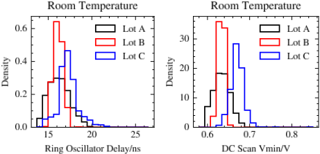
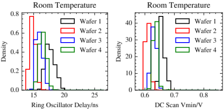
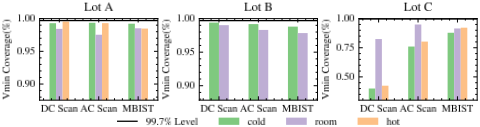
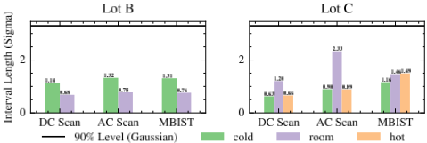

捕获工艺变化的数据高效保形式最小工作电压（Vmin）区间预测
该论文面向芯片制造测试中最小工作电压（Vmin）直接测量需在宽电压范围反复执行、时间与成本高昂的问题，提出用低成本测试特征（如 Ring Oscillator 延迟、IDDQ 漏电流）训练 ML 点预测器并构建区间预测以筛选 outlier。针对 lot-to-lot 工艺变化导致标准 Conformal Prediction（CP）的交换性假设失效、传统 6-sigma 区间缺乏理论覆盖率保证的痛点，提出 CWCQR：先用 Weighted CP 结合 Conformalized Quantile Regression（CQR）处理 covariate shift，再用新工艺下约 50 颗芯片的小型校准集对预测区间做平移与拉伸，以数据高效方式保证设计的覆盖率。在 16nm 汽车芯片、3 个 lot 的工业数据上，CWCQR 仅用 50 颗新芯片校准即达成 90% 覆盖率，较用约 550 颗新芯片重训校准 CQR 节省 91% 测试时间，区间长度仅增加 0.6~1 sigma；而 vanilla CQR 在 lot C 热温下 DC Scan Vmin 覆盖率最低不足 12%。该工作属于 post-silicon 制造测试与 ML 不确定性量化方向，与团队 IP 设计与验证职责无直接交集。
Vmin 精确测量需在宽电压范围内多次执行测试，时间与金钱成本高，制约实际应用；用低成本测试特征训练的 ML 点预测器虽可加速测试流程，但其精度受测量噪声、测试限制与模型能力约束，且训练与测试芯片间存在 lot-to-lot/wafer-to-wafer 工艺变化。传统 6-sigma 区间依赖误差高斯分布假设、无理论覆盖率保证，标准 Conformal Prediction 在跨 lot/跨 wafer 时交换性假设被破坏，均无法为跨工艺条件的 Vmin 区间预测提供可靠覆盖率。
提出 Calibrated Weighted Conformalized Quantile Regression（CWCQR）框架：1) Weighted CQR（WCQR）：引入 Weighted CP 处理 covariate shift 型工艺变化，用 logistic 分类器估计训练/测试特征分布的似然比，对 conformal score 加权，使区间宽度随测试芯片特征自适应；2) 附加校准（Calibrated）：针对 y|x 发生常数偏移且噪声强度变化的更一般工艺变化，用新工艺下约 50 颗芯片的小型校准集计算偏移量 b_cal 对 CQR 区间做平移，并按该校准集的 conformal score 分位数计算 q_cal 对区间做拉伸，在保留大 lot（3754 颗）训练所得模型参数的前提下恢复非渐近覆盖率保证（1-α）。基座模型为 CatBoost 分位数回归器（5%/95% 分位），特征选择采用 CFS+Pearson 相关。
工业数据集：16nm 汽车芯片，lot A 3754 颗、lot B 731 颗、lot C 754 颗，每颗 354 个参数特征，Vmin 含 13 组 DC Scan、30 组 AC Scan、21 组 MBIST pattern，在 -45°C/25°C/125°C 下用 ATE 测得
CatBoost 点预测器跨 lot 预测 RMSE 增幅最高达 5mV（25%，lot A→B）与 21mV（220%，lot A→C）
vanilla CQR 在工艺变化下覆盖率失效：最差情况下对 lot C 热温 DC Scan Vmin 的覆盖率不足 12%
CWCQR 仅用新 lot 50 颗芯片校准即达成 90% 覆盖率，相比用约 550 颗新芯片（75% 新数据）重训校准的 CQR 节省 91% 测试时间，代价是区间长度增加不超过 0.7-sigma（DC Scan）、0.6-sigma（AC Scan）、1-sigma（MBIST）
在 90% 覆盖率需求下，CWCQR 的区间长度（按 sigma 平均计）显著小于 6-sigma 启发式方法
据作者所知，首次将 Weighted CP 与 CQR 结合（WCQR）；并针对 y|x 存在常数偏移加噪声强度变化的更一般工艺变化场景，提出附加校准机制（区间平移+拉伸），使任意预训练区间预测器只需少量新工艺芯片即可恢复理论覆盖率保证，区别于需要大量新数据重训的方法和依赖高斯误差假设的 6-sigma 方法，并在工业 16nm 数据上验证。
相关度级别：low
命中能力域：无明显对应
理由：论文核心是 post-silicon 制造测试（ATE 上 Vmin 测量与 outlier 筛选）中的 ML 区间预测与不确定性量化，属于生产测试/DFT 范畴，不在团队 7 个能力域（IP 架构与微架构、RTL 设计与实现、时序与物理实现、设计验证方法学、形式验证、仿真加速、EDA/验证自动化与 AI 辅助）的覆盖范围内。团队交付 LPDDR/HBM/UCIe 等存储与互连 IP，不拥有芯片级生产测试流程与 ATE 数据链路；论文也未涉及验证平台、覆盖率、仿真加速或 RTL 生成等团队技术栈。其保形预测方法虽是通用统计工具，但与团队能力域无实质关联，与上游 catalog 标注一致。
建议动作：仅了解结论
电子与计算机工程系，加利福尼亚大学圣巴巴拉分校，美国加利福尼亚州圣巴巴拉
y_yin@ucsb.edu
恩智浦半导体（NXP Semiconductors）汽车处理部门，美国得克萨斯州奥斯汀
chen.he@nxp.com
Rebecca Chen
恩智浦半导体汽车处理部门，美国得克萨斯州奥斯汀
rebecca.chen_1@nxp.com
Electrical and Computer Engineering University of California Santa Barbara, CA, USA lip@ucsb.edu

(a) Lot-to-lot variations

idea is to leverage informative, cost-effective testing features, such as on-chip Ring Oscillator (RO) delay and IDDQ leakage current, to predict 𝑉 𝑚𝑖𝑛 , whose direct measurement is expensive.
Nevertheless, the accuracy of 𝑉 𝑚𝑖𝑛 predicted by an ML technique may be compromised by measurement noise, testing limitations, and model capacity constraints, falling short of the high reliability demanded by the semiconductor industry. Adding to the challenge, the presence of process variations between training and testing chips further impedes the accuracy of the 𝑉 𝑚𝑖𝑛 predictor. As illustrated in Figure 1, both lot-to-lot and wafer-to-wafer variations manifest in the input features and target 𝑉 𝑚𝑖𝑛 values across a 16nm chip dataset, consisting of multiple lots with multiple wafers per
准确的最小工作电压（𝑉 𝑚𝑖𝑛）预测是制造测试中的关键要素。传统方法在区间预测中缺乏覆盖率保证。共形预测（CP）是一种无分布的机器学习方法，在为区间预测提供严格的覆盖率保证方面表现出色。然而，标准CP预测器可能因缺乏对工艺偏差的了解而失效。我们通过在存在工艺偏差的情况下以高数据效率提供有原则的共形化区间预测来应对这一挑战，其中利用来自少量额外芯片的数据进行校准。我们在工业16nm芯片数据上展示了所提方法的优越性。
Yuxuan Yin、Rebecca Chen、Chen He 和 Peng Li。2024年。捕捉工艺偏差的最小工作电压数据高效共形化区间预测。载于第61届 ACM/IEEE 设计自动化会议（DAC '24），2024年6月23日至27日，美国加利福尼亚州旧金山。ACM，美国纽约州纽约，共6页。https://doi.org/10.1145/3649329.3657338
The assessment of the minimum operating voltage ( 𝑉 𝑚𝑖𝑛 ) stands as an important test for silicon manufacturers aiming to enhance product reliability and yield by identifying and eliminating outliers and potentially defective chips [5]. Nevertheless, the precise determination of 𝑉 𝑚𝑖𝑛 necessitates the execution of a testing scheme multiple times, spanning a broad range of operating voltages. This limitation hampers its practical applicability due to the associated undesirable temporal and financial costs.
In light of the emerging success of contemporary MachineLearning (ML) methods across diverse scientific domains, there is a growing focus on developing an ML-based chip performance predictor to expedite the testing workflow [1, 7, 12, 16]. The key
Permission to make digital or hard copies of part or all of this work for personal or classroom use is granted without fee provided that copies are not made or distributed for profit or commercial advantage and that copies bear this notice and the full citation on the first page. Copyrights for third-party components of this work must be honored. For all other uses, contact the owner/author(s).
© 2024 Copyright held by the owner/author(s).
ACM ISBN 979-8-4007-0601-1/24/06.

lot. Consequently, it is risky to directly employ a pre-trained 𝑉 𝑚𝑖𝑛 predictor on chips from different lots/wafers. To this end, it is desirable to develop a robust interval predictor that ensures ❶ a rigorous coverage for 𝑉 𝑚𝑖𝑛 prediction under ❷ process variations, while also exhibiting ❸ high data efficiency.
Traditional interval prediction methods [8], such as ones based on utilizing the 6-sigma of the error distribution, focus on achieving a 99.7% coverage rate while making the strong Gaussian assumption on the 𝑉 𝑚𝑖𝑛 predictor's error. However, the underlying assumption for error distribution may be misleading, especially when the training data is insufficient to fit an accurate 𝑉 𝑚𝑖𝑛 predictor. Furthermore, process variations may exacerbate the deviation from any derived theoretical coverage. In Figure 2, we illustrate the empirical coverage rate of the 6-sigma interval on hundreds of chips from all of the 3 lots, whereas the 𝑉 𝑚𝑖𝑛 predictor is a linear regressor trained on thousands of chips from lot A. Additional details regarding experimental settings are provided in Section 4.1. Notably, the 6-sigma method not only falls short of the theoretical coverage rate on lot A, indicating an incorrect assumption about the error distribution, but also performs poorly under the influence of process variations, particularly evident in predictions made on lot C.
共形预测（Conformal Prediction, CP）[11] 已成为一种颇具前景的无分布不确定性量化（Uncertainty Quantification, UQ）方法，其可基于任意点预测器构建区间，同时提供非渐近的覆盖率保证。CP 利用从训练数据集中分离出来的留出校准数据，来评估所拟合回归模型对新测试数据的不确定性。尽管采用 CP 来实现可靠的 𝑉 𝑚𝑖𝑛 区间预测是应对覆盖率保证的一种合理实现方式，但当使用 CP 预测器去评估在另一工艺条件下制造的芯片时，这一属性便不再成立。
为此，我们提出了一种新颖的无分布 𝑉 𝑚𝑖𝑛 区间预测框架，命名为校准加权共形化分位数回归（Calibrated Weighed Conformalized Quantile Regression, CWCQR），其具有 ❶ 理论覆盖率保证，能够同时应对 ❷ 工艺偏差与 ❸ 数据效率问题。我们的方法对共形化分位数回归（Conformalized Quantile Regression, CQR）[10] 进行系统性校准，使其在工艺偏差下满足设计的覆盖率。我们的主要贡献如下：
· 我们通过实验证明，在一个工业数据集上，我们的方法优于若干现有的区间预测基线方法。
我们首先介绍基于机器学习（ML）的 𝑉 𝑚𝑖𝑛 预测器的一般训练流程，然后总结目前流行的区间预测方法。
𝑉 𝑚𝑖𝑛 点预测可以视为在训练芯片上拟合一个基于ML的预测器以最小化损失函数，其中以低成本测试特征作为模型输入，以 𝑉 𝑚𝑖𝑛 作为输出。我们将包含 𝑁 颗芯片的训练数据集记为 D = {( x 𝑖 , y 𝑖 )} 𝑁 𝑖 = 1 ，其 𝐷 个测试特征被聚合为向量 x ∈ R 𝐷 ，真实 𝑉 𝑚𝑖𝑛 为标量 y ∈ R 。我们可以通过最小化损失函数 L 来优化预测器 𝑔 (· ; 𝜽 ) : R 𝐷 → R 的参数 𝜽 ：
其中 ˆ y = 𝑔 ( x ; 𝜽 ) 为模型预测。
例如，我们可以应用均方误差（MSE）损失 L 𝑚𝑠𝑒 来训练一个偏差和方差均较小的点预测器。
𝑉 𝑚𝑖𝑛 的点估计并非测试过程的最后一步。事实上，还需要构建 𝑉 𝑚𝑖𝑛 区间，以区分正常器件与离群器件。半导体行业的工程师在实际中通常对点预测施加宽度为 6-sigma 的区间。对于输入特征为 x 的芯片，其 6-sigma 区间 𝐶 ( x ) 为
其中 𝜎 为 𝑔 在训练数据集 D 上预测误差的标准差。
尽管 6-sigma 方法为芯片构建的边界看似合理，但该方法无法为其对测试数据的预测提供理论覆盖率。假设我们有一个测试芯片 ( x 𝑡𝑒𝑠𝑡 , y 𝑡𝑒𝑠𝑡 )，我们想知道式 (2) 中 6-sigma 区间的经验失覆盖率 𝛼 ∈ [ 0 , 1 ]：
遗憾的是，𝛼 的估计依赖于对模型预测误差的强假设，这限制了这种启发式区间预测方法的可靠性与有效性。
共形预测（CP）[11] 是一种无分布的不确定性量化（UQ）方法，可为测试数据提供严格的非渐近覆盖率保证。它是针对点预测器的一种附加训练后策略，用于构建可靠的预测区间。CP 的前提假设是训练数据与测试数据是可交换的。可交换性是比独立同分布（i.i.d.）性质更弱的条件，即 D 与 ( x 𝑡𝑒𝑠𝑡 , y 𝑡𝑒𝑠𝑡 ) 采样自同一分布。在我们的芯片性能预测场景中，只要两组芯片来自同一工艺，该假设就应当成立。
面向最小工作电压、捕捉工艺变化的数据高效共形化区间预测
CP 旨在为测试芯片上的点预测器 𝑔 构建一个具有设计覆盖率 1 - 𝛼 的区间 𝐶 (·)：
其中，ˆ 𝑞 ∈ [ 0 , +∞) 是一个待确定的正值，𝑠 ( x , y ) → R 是用于评估一致性的得分函数。
我们描述如何在 CP 中计算 ˆ 𝑞，具体而言，是在 split CP 1 中进行计算。Split CP 将训练数据集 D 划分为两个不相交的子集，其中一个用于训练模型，另一个用于计算 ˆ 𝑞。其思想是：利用从测试数据 ( x 𝑡𝑒𝑠𝑡 , y 𝑡𝑒𝑠𝑡 ) 的分布中采样得到的一些未见数据，通过检验其一致性来校准模型的启发式不确定性。一致性由得分函数 𝑠 ( x , y ) → R 评估，其值越大表示差异越大。
我们深入介绍 CP 的详细流程。从 D 中划分出的两个不相交子集分别是新的训练数据集 D 𝑡𝑟𝑎𝑖𝑛 和校准数据集 D 𝑐𝑎𝑙𝑖 。在新的训练数据集 D 𝑡𝑟𝑎𝑖𝑛 上训练点预测器 𝑔，以最小化式 (1)。
不失一般性，我们假设前 |D 𝑐𝑎𝑙𝑖 | 个样本构成校准集。接下来，我们选择绝对残差作为一致性得分，并计算校准数据集 D 𝑐𝑎𝑙𝑖 的一致性：
最后，将 ˆ 𝑞 设为第 ⌈( 1 - 𝛼 )( 1 + |D 𝑐𝑎𝑙𝑖 |)⌉ 小的得分：
[15] 中证明，式 (7) 中的 ˆ 𝑞 使式 (4) 中的区间满足覆盖率 1 - 𝛼，这等价于
尽管 CP 提供了具有理论覆盖率保证的无分布预测区间，它仍存在一个明显的局限：区间长度固定为 2 ˆ 𝑞，而与测试芯片的输入特征 x 𝑡𝑒𝑠𝑡 无关。这一特性可能导致对异常芯片的漏杀以及对正常芯片的过杀。此外，它无法应对工艺变化，限制了其在工业实践中的有效性。
CQR[10] 首次将分位数回归（Quantile Regression, QR）[6] 引入 CP，使其能够适应异方差性，同时保持同等的非渐近覆盖率保证。CQR 的框架与 CP 相同，仅有 2 处差异：
给定设计的覆盖率 1 - 𝛼，CQR 训练两个分位数预测器 𝑔 𝛼 / 2 (· ; 𝜽 𝑙𝑜 ) : R 𝐷 → R 和 𝑔 1 - 𝛼 / 2 (· ; 𝜽 ℎ𝑖 ) : R 𝐷 → R，分别用于回归 ( 𝛼 / 2 ) 分位数至 ( 1 - 𝛼 / 2 ) 分位数区间的下界和上界。模型训练采用分位数损失 L 𝛾 而非 MSE 损失 L 𝑚𝑠𝑒：
1 CP 有两种主要变体：full CP 和 split CP。当 y 可以取无穷多个值时，full CP 不适用于回归问题，因为它需要进行无穷多次模型训练。因此，本文在此介绍 split CP。
其中 𝛾 ∈ [ 0 , 1 ] 为设计的分位数。
在 CQR 中，校准数据集 D 𝑐𝑎𝑙𝑖 中第 𝑖 个样本的保形得分定义为
CQR 采用标量 ˆ 𝑞 来构建预测区间，其中 ˆ 𝑞 同样是保形得分的第 ⌈( 1 - 𝛼 )( 1 + |D 𝑐𝑎𝑙𝑖 |)⌉/|D 𝑐𝑎𝑙𝑖 | 分位数，由式 (7) 计算得到。式 (4) 中预测区间的表达式可以写为
如 [10] 所示，上述区间满足式 (5) 中的 1 - 𝛼 覆盖率。
尽管 CQR 为测试芯片 ( x 𝑡𝑒𝑠𝑡 , y 𝑡𝑒𝑠𝑡 ) 给出了具有非渐近覆盖率保证的预测区间，但它假设 ( x 𝑡𝑒𝑠𝑡 , y 𝑡𝑒𝑠𝑡 ) 与 ( x 𝑖 , y 𝑖 ) 服从同一分布，其中 ( x 𝑖 , y 𝑖 ) ∈ D 。如图 1 所示，由于工艺变化的存在，当 ( x 𝑡𝑒𝑠𝑡 , y 𝑡𝑒𝑠𝑡 ) 取自新的批次或新的晶圆时，该假设可能不成立，从而导致 CQR 的覆盖率恶化。
为了强调工艺变化的影响，我们提出了 CWCQR，它在具有高数据效率的同时满足非渐近覆盖率保证。我们将加权共形预测（CP）[14] 引入 CQR，以处理训练数据与测试数据之间输入特征的分布偏移。此外，我们提出了一种额外的校准方案，对预测区间进行平移和拉伸，从而在保证所设计覆盖率的同时，保留从大型训练数据集 D 中学习到的宝贵模型参数。CWCQR 在确保可靠预测区间方面具有数据效率优势。
Weighted CP [14] is capable of a specific kind of process variation, named covariate shift [13], which means training features' distribution 𝑝 and testing features' distribution 𝑝 𝑡𝑒𝑠𝑡 are different, whereas the conditional distribution y | x stays fixed. This relationship can be formulated as:
where 𝑓 : R 𝐷 → R is an agnostic real-world physical model, 𝛿 : R 𝐷 → R is an unknown zero-mean noise, dependent on x .
Weighted CP introduces a weighting scheme for conformal scores, whose weights depend on features of the testing data. The weight of 𝑖 -th conformal score 𝑠 𝑖 is
where 𝑟 : R 𝐷 → [ 0 , +∞) is the likelihood ratio of two feature distributions: 𝑟 ( x ) = 𝑝 𝑡𝑒𝑠𝑡 ( x )/ 𝑝 ( x ) .
Intuitively, the weight is larger when the features are more likely to be sampled from the test distribution, and vice versa.
Next, we describe how weighted CP computes ˆ 𝑞 ( x 𝑡𝑒𝑠𝑡 ) , which is dependent on x 𝑡𝑒𝑠𝑡 . Without loss of generality, suppose D 𝑐𝑎𝑙𝑖 is sorted to an ascending order of the conformal score. Then, we have
| Attributes | Lot A | Lot B | Lot C |
|---|---|---|---|
| # Dies | 3754 | 731 | 754 |
| # Parametric features | 354 | 354 | 354 |
| # DC Scan 𝑉 𝑚𝑖𝑛 | 13 | 13 | 13 |
| # AC Scan 𝑉 𝑚𝑖𝑛 | 13 | 13 | 13 |
| # MBIST 𝑉 𝑚𝑖𝑛 | 9 | 9 | 9 |
| Test temperature/°C | -40, 25, 125 | -40, 25 | -40, 25, 125 |
| Attributes | Lot A | Lot B | Lot C |
such that Equation (5) is satisfied where
While weighed CP is a general framework regardless of the selection of the score function, its combination with CQR has not been explored yet, to the best of our knowledge. Moreover, weighed CP provides a plausible solution for covariate shift in process variations. To this end, we propose Weighted Conformalized Quantile Regression (WCQR), introducing the weighed scheme to CQR.
In WCQR, the score function is defined in Equation (10), and the prediction interval is
where ˆ 𝑞 ( x 𝑡𝑒𝑠𝑡 ) is presented in Equation (14). Under the weighted CP's framework [14], our prediction interval has at least 1 - 𝛼 coverage rate for y 𝑡𝑒𝑠𝑡 .
所提出的 WCQR 提供了具有非渐近覆盖率保证的区间预测。需要注意的是，该性质仅在协变量偏移（covariate shift）假设下成立，即对于训练数据和测试数据，y | x 保持相同。然而，在我们的 𝑉 𝑚𝑖𝑛 预测场景中，这一假设有时过于苛刻，因为某些工艺变化本质上并不遵循该假设。一个更一般且更符合实际的假设是：y 𝑡𝑒𝑠𝑡 | x 𝑡𝑒𝑠𝑡 相对于 y | x 存在一个恒定偏移，且噪声强度发生了变化。关于 y 𝑡𝑒𝑠𝑡 | x 𝑡𝑒𝑠𝑡 的这一假设可以表述为：
其中，偏置 𝑏 ′ ∈ R 为一个实数，噪声 𝛿 ′ 从一个依赖于 x 𝑡𝑒𝑠𝑡 的零均值分布中采样得到。
我们提出 CWCQR 来处理上述类型的工艺变化。其针对 x 𝑡𝑒𝑠𝑡 的预测区间构造为
在此，通过确定两个标量 ˆ 𝑏 𝑐𝑎𝑙𝑖 和 ˆ 𝑞 𝑐𝑎𝑙𝑖 来处理偏置 𝑏 ′ 与噪声 𝛿 ′ ，从而确保对 y 𝑡𝑒𝑠𝑡 达到 1 - 𝛼 的覆盖率。
CWCQR 采用一个额外的小型校准数据集 D ′ 𝑐𝑎𝑙𝑖 来计算 ˆ 𝑏 𝑐𝑎𝑙𝑖 和 ˆ 𝑞 𝑐𝑎𝑙𝑖 ，其中 D ′ 𝑐𝑎𝑙𝑖 与 ( x 𝑡𝑒𝑠𝑡 , y 𝑡𝑒𝑠𝑡 ) 处于同一工艺之下。为方便起见，我们假设 D ′ 𝑐𝑎𝑙𝑖 的索引取值范围为 𝑁 + 1 到 𝑁 + 𝑀 。
| Lot te. | Temperature. | Lot tr. | 𝑉 𝑚𝑖𝑛 Prediction RMSE ( 𝑚𝑉 ).DC Scan | 𝑉 𝑚𝑖𝑛 Prediction RMSE ( 𝑚𝑉 ).AC Scan | 𝑉 𝑚𝑖𝑛 Prediction RMSE ( 𝑚𝑉 ).MBIST |
|---|---|---|---|---|---|
| A | cold | 5.52 | 7.17 | 8.84 | |
| A | room | A | 22.89 | 29.54 | 22.67 |
| A | hot | 6.85 | 8.35 | 15.34 | |
| B | cold | A | 6.14 | 8.89 | 10.67 |
| B | B | 5.09 | 7.13 | 8.16 | |
| B | room | A | 20.55 | 25.82 | 25.37 |
| B | B | 16.66 | 23.51 | 20.52 | |
| C | cold | A | 29.92 | 25.23 | 23.54 |
| C | C | 9.36 | 9.59 | 10.79 | |
| room | A | 31.45 | 25.96 | 29.31 | |
| C | 15.58 | 13.97 | 11.89 | ||
| hot | A | 26.07 | 25.74 | 26.49 | |
| C | 9.85 | 10.64 | 14.46 |
| Lot te. | Temperature. | Lot tr. | 𝑉 𝑚𝑖𝑛 Prediction RMSE ( 𝑚𝑉 ).DC Scan | 𝑉 𝑚𝑖𝑛 Prediction RMSE ( 𝑚𝑉 ).AC Scan | 𝑉 𝑚𝑖𝑛 Prediction RMSE ( 𝑚𝑉 ).MBIST |
为了估计 𝑉 𝑚𝑖𝑛 的偏移，我们将预测区间 𝐶 ( x ) 平移为 𝐶 ( x ) + ˆ 𝑏 𝑐𝑎𝑙𝑖 ，以尽可能多地覆盖 D ′ 𝑐𝑎𝑙𝑖 ：
为了应对工艺变化下的噪声差异，我们拉伸预测区间以满足 1 - 𝛼 的覆盖率。我们借鉴 CQR 的思想来计算 D ′ 𝑐𝑎𝑙𝑖 的保形性，其保形分数为
接下来，我们将 ˆ 𝑞 𝑐𝑎𝑙𝑖 选为
我们在数千颗 16nm 汽车芯片上开展实验，以证明我们的方法在应对工艺变化方面的有效性。我们旨在说明：1) 工艺变化对标准 𝑉 𝑚𝑖𝑛 点预测器造成的致命影响，以及 2) CWCQR 在应对工艺变化方面的卓越效果与数据效率。具体而言，我们在实验中考虑了批次间（lot-to-lot）变化。
如表 1 所示，芯片采样自 3 个不同的批次：3754 颗来自批次 A，731 颗来自批次 B，754 颗来自批次 C。对于每颗芯片，我们采用相同的测试流程采集 354 个参数特征和 𝑉 𝑚𝑖𝑛，分别用作预测器的输入数据和输出目标。我们测量了 3 种类型的 𝑉 𝑚𝑖𝑛：13 个向量的 DC Scan 𝑉 𝑚𝑖𝑛、30 个向量的 AC Scan 𝑉 𝑚𝑖𝑛，以及 21 个向量的存储器内建自测试（MBIST）𝑉 𝑚𝑖𝑛。下面我们描述输入特征和输出 𝑉 𝑚𝑖𝑛 的采集方式。
在测试流程中，我们首先测试 𝑉 𝑚𝑖𝑛 的所有向量，然后执行参数测试。两个阶段均在同一特定温度下完成：-45°C（低温）、25°C（室温）或 125°C（高温）。𝑉 𝑚𝑖𝑛 测试和参数测试均在自动测试设备（ATE）测试机上执行。
捕捉工艺变化的最小工作电压数据高效保形化区间预测
| 𝑉 𝑚𝑖𝑛.predictor | 𝑉 𝑚𝑖𝑛 Prediction RMSE ( 𝑚𝑉 ).DC Scan | 𝑉 𝑚𝑖𝑛 Prediction RMSE ( 𝑚𝑉 ).AC Scan | 𝑉 𝑚𝑖𝑛 Prediction RMSE ( 𝑚𝑉 ).MBIST |
|---|---|---|---|
| Linear Regression | 10.65 | 10.99 | 12.88 |
| XGBoost | 5.63 | 8.23 | 9.25 |
| CatBoost | 5.52 | 7.17 | 8.84 |
| 𝑉 𝑚𝑖𝑛.predictor | 𝑉 𝑚𝑖𝑛 Prediction RMSE ( 𝑚𝑉 ).DC Scan | 𝑉 𝑚𝑖𝑛 Prediction RMSE ( 𝑚𝑉 ).AC Scan | 𝑉 𝑚𝑖𝑛 Prediction RMSE ( 𝑚𝑉 ).MBIST |
Our experiments compare CWCQR to vanilla CQR on our industrial dataset to verify its effectiveness in addressing lot-to-lot variations in 𝑉 𝑚𝑖𝑛 interval prediction.
Experimental Settings. For both methods, we employ the same configurations for a fair comparison. Since CWCQR basically calibrates a base CQR model, we first introduce how to train a CQR, then describe how our method works.

For CQR, the training dataset D is all of 3754 chips from lot A, and it is further separated into two subsets: 1) D 𝑡𝑟𝑎𝑖𝑛 for containing 75% chips for training quantile regressors, and 2) D 𝑐𝑎𝑙𝑖 , including the rest 25% ones for calibration. We set the miscoverage 𝛼 to 0 . 1, and train two CatBoost quantile regressors whose objectives are 5% and 95% 𝑉 𝑚𝑖𝑛 , respectively.
For CWCQR, two additional steps are proposed: a weighting scheme and a further calibration. In the first stage, we follow [14] to adopt a logestic classifier to estimate the likelihood ratio. In avoiding the overfitting problem for this classifier, CFS is employed to select 5 features with the top-5 highest linear correlations to 𝑉 𝑚𝑖𝑛 . In the second stage, 50 evaluated from the testing lot are utilized for further calibration to compute ˆ 𝑏 𝑐𝑎𝑙𝑖 and ˆ 𝑞 𝑐𝑎𝑙𝑖 .
One unfair setting is that CWCQR essentially requires new calibration data. To address this concern, we also calibrate the CQR model on these data: the model is viewed as a heuristic interval predictor just like QR, and a CQR framework is employed to satisfy a 90% coverage rate.
Results. The average length and coverage rate of 𝑉 𝑚𝑖𝑛 prediction intervals are listed in Table 4. Although CQR satisfies the designed coverage in lot A, its reliability is not held in lot B and C. In the worst case, it only covers less than 12% true DC Scan 𝑉 𝑚𝑖𝑛 of chips from lot C, tested at the hot temperature. Despite that D ′ 𝑐𝑎𝑙𝑖 successfully calibrates CQR to achieve a 90% coverage rate, the average length of its prediction intervals is much longer than that of CWCQR for most 𝑉 𝑚𝑖𝑛 test patterns, underscoring the superior performance of our approach. Compared with CQR trained on the 75% new data ( ∼ 550 chips), CWCQR is much more data-efficient: it requires measurements of 50 new chips for calibration. We save 91% testing time to provide a reliable interval prediction with a 90% coverage for 𝑉 𝑚𝑖𝑛 , scarifying an increased interval length within 0.7-sigma for DC Scan 𝑉 𝑚𝑖𝑛 , 0.6-sigma for AC Scan 𝑉 𝑚𝑖𝑛 , and 1-sigma for MBIST 𝑉 𝑚𝑖𝑛 , where sigma is the 𝑉 𝑚𝑖𝑛 point predictor's residual under process variations.
In addition, we demonstrate that the distribution-free CWCQR outperforms the sigma method to satisfy a 90% coverage demand. We report the prediction interval length quantified by the sigma average across all test patterns under lot-to-lot variations. As shown in Figure 3, CWCQR achieves much smaller intervals than the sigma method, indicating that CWCQR's efficiency and robustness under process variations.
| Lot te.Lot te | Temperature.Temperature | Lot tr.Lot tr | Method.Method | DC Scan.Len. ( 𝑚𝑉 ) | DC Scan.Cov. (%) | AC Scan.Len. ( 𝑚𝑉 ) | AC Scan.Cov. (%) | MBIST.Len. ( 𝑚𝑉 ) | MBIST.Cov. (%) |
|---|---|---|---|---|---|---|---|---|---|
| B | CQR | 19.55 | 90.98±1.45 | 26.52 | 90.60±1.18 | 31.18 | 90.18±1.36 | ||
| cold | CQR | 17.25 | 86.87±3.36 | 24.44 | 87.93±3.64 | 28.26 | 79.05±11.86 | ||
| A | CQR with Addi. Cali. | 21.39 | 93.02±3.78 | 30.10 | 92.57±6.33 | 35.54 | 90.54±3.87 | ||
| B | CWCQR | 20.63 | 90.64±4.94 | 27.57 | 90.26±6.21 | 36.31 | 90.93±4.39 | ||
| B | CQR | 23.46 | 91.58±1.20 | 32.74 | 90.45±1.31 | 38.30 | 90.74±0.88 | ||
| room | CQR | 34.38 | 92.24±2.07 | 49.37 | 90.83±2.62 | 42.17 | 75.47±21.72 | ||
| A | CQR with Addi. Cali. | 35.27 | 90.79±0.67 | 93.24±2.51 | |||||
| CWCQR | 31.94 | 92.29±4.47 89.38±4.40 | 53.95 46.09 | 91.11±4.49 | 52.40 42.31 | 90.55±4.29 87.02±6.17 | |||
| C | CQR | 28.13 | 34.55 | 91.46±0.81 | 42.05 | 91.59±1.21 | |||
| cold | CQR | 17 | 12.57±15.69 | 23.09 | 23.94±9.41 | 27.61 | 45.48±20.28 | ||
| A | CQR with Addi. Cali. | 77.21 | 91.51±7.16 | 71.31 | 90.47±3.88 | 77.39 | 91.03±3.37 | ||
| CWCQR | 36.73 | 91.38±4.42 | 39.02 | 90.25±3.68 | 56.43 | 90.05±6.17 | |||
| C | CQR | 30.06 | 91.90±1.03 | 37.03 | 91.77±0.91 | 46.30 | 91.91±0.70 | ||
| C room | CQR | 41.35 | 44.03±38.57 | 57.40 | 72.93±27.77 | 42.20 | 58.14±25.67 | ||
| A | CQR with Addi. Cali. | 85.38 | 92.56±4.63 | 71.34 | 91.60±5.20 | 91.97 | 93.47±3.64 | ||
| CWCQR | 40.77 | 89.65±3.91 | 51.25 | 86.81±4.21 | 70.48 | 89.74±4.80 | |||
| C | CQR | 29.75 | 90.13±1.66 | 42.70 | 91.70±2.20 | 55.05 | 91.82±2.48 | ||
| hot | CQR | 23.9 | 11.88±7.80 | 33.16 | 25.50±12.25 | 50.99 | 50.06±25.34 | ||
| A | CQR with Addi. Cali. | 78.16 | 92.65±2.44 | 93.27 | 92.46±3.42 | 91.00 | 92.26±4.21 | ||
| CWCQR | 41.1 | 91.63±4.16 | 55.45 | 92.85±4.66 | 70.92 | 90.69±6.09 |
| Lot te.Lot te | Temperature.Temperature | Lot tr.Lot tr | Method.Method | DC Scan.Len. ( 𝑚𝑉 ) | DC Scan.Cov. (%) | AC Scan.Len. ( 𝑚𝑉 ) | AC Scan.Cov. (%) | MBIST.Len. ( 𝑚𝑉 ) | MBIST.Cov. (%) |
我们提出了一种新颖的无分布假设的 𝑉 𝑚𝑖𝑛 区间预测方法 CWCQR，其具有理论上的非渐近覆盖率保证。我们引入了一种系统化的校准方案，用于调整基础 CQR 模型以满足设计的覆盖率。通过利用来自训练批次的有价值信息，CWCQR 实现了卓越的数据效率与有效性。尽管我们的实验中以批次间差异为例进行演示，但我们相信我们的方法能够应对硅制造流程中其他类型的工艺偏差。事实上，CWCQR 是一个新的数据高效保形化区间预测框架，可对任何预训练的区间预测器进行校准，从而在处理训练数据与测试数据之间的分布偏移时确保高可靠性。